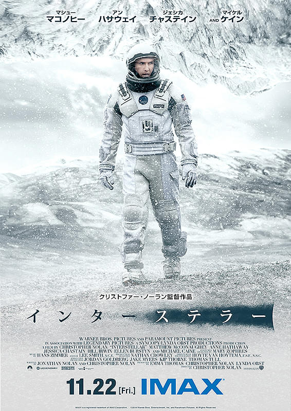

私を洋画沼に引きずり込んだ作品
投稿日: 2025-05-10
nobuです
今回は私が散々布教したがっている洋画にハマるキッカケとなった「インターステラー」を紹介したいと思います。

[あらすじ]
近未来、主人公である元パイロットのクーパーは、異常気象で作物もまともに育たない地球で農家をしていました。あることから偶然か必然かNASAの施設を発見してしまい、別の銀河に人類の新天地を求めるプロジェクト「ラザロ計画」に参加を決意します。
この作品の面白いところはやはり向かった星の特性に翻弄されたり、地球に残された家族との絆です。特に主人公が家族からビデオメッセージを受け取り見るシーンでは皆さんも涙なしでは見ることができないでしょう・・・
この作品はクリストファー・ノーラン監督という「テネット」や「ダークナイト」などの有名な作品を作っているとても私の好きな映画監督であり、最新作の「オッペンハイマー」もこの監督が作っています。
彼が作る作品は割と話が難解なことで有名なのですが、YouTubeやブログで多くの考察動画・記事も上がっているので、観終わった後に理解を更に深めるという楽しみ方もあります。
そしてクリストファー・ノーラン作品を見る上もっと楽しめる要素として他の作品で出てきた俳優の方がまた同じ監督の作品で出てくるところです。（京アニみたいなことしてる）例えばマイケル・ケインは、本作でも重要な役で登場しています。他作品にも頻繁に出演しているので、ぜひ探してみてください！
ということでこの作品は洋画に抵抗がある方も、SF映画が好きな方も虜になってしまうはずです！Amazon Prime Videoに吹き替え版があるので、あなたも、「インターステラー」で洋画の面白さに目覚めてみませんか？